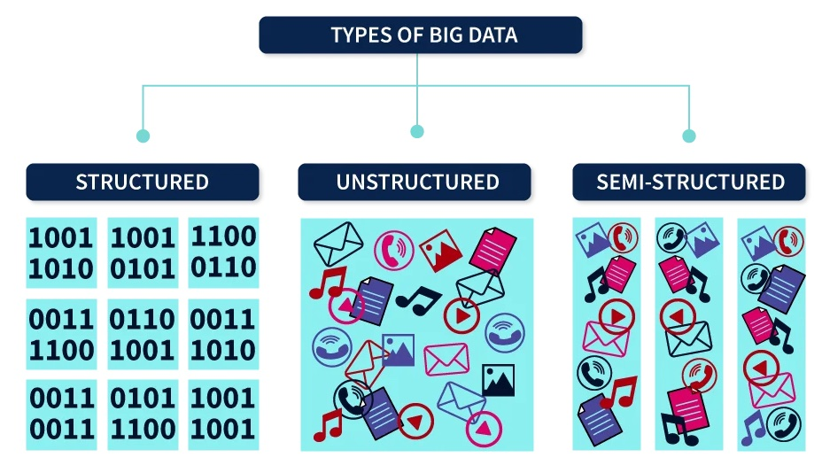

Chapter 1 What is Big Data?
Big Data is a collection of data that is huge in volume, yet growing exponentially with time. It is a data with so large size and complexity that none of traditional data management tools can store it or process it efficiently. It refers to massive, complex data sets (either structured, semi-structured or unstructured) that are rapidly generated and transmitted from a wide variety of sources.
In 2023, we’re surrounded by examples of Big Data:
- Social Media
- Stock Exchanges
- Flights
- … basically anything you can think of!
1.1 The three V’s of Big Data
- Volume. The huge amounts of data being stored.
- Velocity. The speed at which (new) data streams must be processed and analyzed.
- Variety. The different sources and forms from which data is obtained, e.g. numbers, text, images, video, audio, …
Volume
As of 2021, 2.5 quintillion bytes of data are produced by humans every single day. A quintillion is a number with 18 zeros. It is estimated that 463 exabytes of data will be generated by 5 billion internet users all over the world by the year 2025 (source).
Big Data is all about volume.

Because there is so much data available, businesses can use both past and present data to gain insights into their customers in a more comprehensive way. With such massive amounts of data, new and innovative data processing and storing technologies are required. These datasets just can’t be processed by a conventional desktop computer and processor due to their size.
- There were 5 exabytes of information created between the dawn of civilization through 2003, but that much information is now created every two days.
- Eric Schmidt, Executive Chairman at Google (in 2010!)
Velocity
The pace at which Big Data is created, gathered, and distributed is referred to as velocity. This is the rapid rate at which data is generated from various sources, including machines, corporate operations, and user interactions with social media platforms, among others. High-velocity data processing calls for specialized methods using cutting-edge analytical and algorithmic tools. The speed at which data is created becomes even more crucial for some applications than the volume itself. Fast-moving data is advantageous for financial trading companies.
For example, Amazon records every mouse click made by customers while browsing its website. This happens quickly. Stream processing relies heavily on velocity. Consider all of the data coming in from radio-frequency identification (RFID), global positioning system (GPS), near-field communication (NFC), and Bluetooth sensors. When a specific pattern is detected, stream processing attempts to aggregate single data points from high-velocity data in order to trigger a high-level event. It also focuses on deciding which data to keep from a stream, because it is impossible to keep all of the data that comes in.

Variety
There are a number of relatively recent sources for gathering both structured and unstructured data, including sensor readings, photographs on social media, GPS signals from mobile devices, and more. Smartphones and other mobile devices are now an important source of information on people, activity, and locations due to the global surge in internet use. Structured data, which is simpler to store, is made up of the conventionally available data, such as spreadsheets and text. It is challenging to store and evaluate the vast types of unstructured data, such as videos, photos, and audios, in order to come up with findings. Finding data that is well organized and easy to process is quite unusual.
1.2 Other V’s of Big Data
Although the previously mentioned V’s are the three main V’s of Big Data, two additional ones are typically considered as well, depending on the source:
- Veracity. Refers to the quality and accuracy of data.
- Value. Refers to the insights that big data can provide.
Veracity
The collected data can be incomplete, erroneous, or unable to offer any useful, insightful information. Veracity, in general, refers to the degree of confidence in the data that has been gathered. Data can occasionally become disorganized and challenging to use. If the data is incomplete, a big volume of data may produce more confusion than insights. For instance, in the medical industry, if information about the medications a patient is taking is lacking, the patient’s life may be in danger. Questions to ask: are we missing some (key) pieces of data? Are the data that we have clean and accurate?
Value
Data is useless unless it can be used to generate actionable insights that help a business or organization grow. The data value is a concept that is frequently quantified as the potential economic value of the data. The value of the same data may differ from one organization to the next[8]. For example, an app like Google Maps may use GPS data from a mobile phone to calculate a navigation route. The same GPS data can be used by a fitness app like Apple Health to calculate the number of steps taken and calories burned.
As a result, the concept of data value is weakly defined, however, in terms of business, the V for value sits at the top of the Big Data pyramid. It basically refers to the ability to transform a tsunami of data into insights, which can be used for business. Value refers to how useful the data is in decision making. We need to extract the value of the Big Data using proper analytics.
Real-life example from an insurance company:
We can also localize our most important customers, and we know which ones do not have any value, either because they cancel frequently, are always looking for discounts, or we may have suspicions of fraud. They are customers with a similar profile, but they’re also very different. Years ago, we weren’t able to distinguish them. Now we can, thanks to big data.
1.3 Some statistics of Big Data
Some interesting statistics on Big Data (source, Dec 2022):
In 2021, it was forecast that the overall amount of data created worldwide would reach 79 zettabytes (1 zettabyte = 1,000,000,000 terabytes). By 2025, this amount is expected to double.
There is 10% unique and 90 % replicated data in the global datasphere. Of all of the data in the world at the moment, approximately 90% of it is replicated data, with only 10% being genuine, new data. The 1:9 ratio is expected to change (worsen) to 1:10 by 2024.
It would take approximately 181 million years for an internet user to download all data from the web today.
Between 80-90% of the data that internet users generate in unstructured.
In 2021, the US was the country with most data centers in the world.

1.4 Types of Big Data
Big data is classified in three ways:
- Structured data
- Unstructured data
- Semi-structured data

While these three terms are technically applicable to all amounts of datag, they are especially important in big data. Understanding where raw data comes from and how it must be treated before analysis becomes even more important when dealing with large amounts of big data. Because there is so much of it, information extraction must be efficient in order to be worthwhile.
The structure of the data determines not only how to work with it, but also what insights it can yield. Before data can be analyzed, it must first be extracted, transformed, and loaded (ETL). It’s a very literal term: data is harvested, formatted so that an application can read it, and then stored for later use. The ETL process differs for each data structure.
Structured data
Structured data is the one we’re used to and the one we typically work with. It is well-organized, with dimensions determined by predefined parameters. Consider spreadsheets, STATA, R; each piece of information is organized into rows and columns. Specific elements defined by specific variables are easily found. It’s the quantitative and qualitative data we typically think of:
- Age
- Sex
- Nationality
- Income
- Address
- Bank account numbers
- …
Because structured data is already tangible numbers, a program can sort through and collect data much more easily. Structured data adheres to schemas, which are essentially road maps to specific data points. These schemas describe where each datum is located and what it means.
For example, a payroll database will include information such as employee identification, pay rate, hours worked, and how compensation is delivered, among other things. Each of these dimensions will be defined by the schema for whatever application is using it. The program will not have to sift through data to figure out what it means; instead, it will be able to get right to work collecting and processing it.
Unstructured data
On the other hand, unstructured data (which accounts for up to 80-90% of all data) is any piece of information that lacks a specific format and is stored in original form without any presets or schemas.
It doesn’t fit into these sorts of pre-defined data models. It can’t be stored neatly into columns and rows. And because it comes in so many formats, it’s a real challenge for conventional software to ingest, process, and analyze. Or to be extracted, transformed, and loaded (ETL).
Simple content searches can be undertaken across textual unstructured data with the right tools, but beyond that, the lack of consistent internal structure doesn’t conform to what typical data mining systems can work with.
Some examples of unstructured data:
Multimedia content: Digital photos, audio, and video files are all unstructured. Complicating matters, multimedia can come in multiple format files, produced through various means. For instance, a photo can be TIFF, JPEG, GIF, PNG, or RAW, each with their own characteristics.
Text files: Almost all traditional business files, including your word processing documents, presentations, notes, and PDFs, are unstructured data.
Social media: Social media has a component of semi-structured data you can access through built-in analytics, but the content of each social media message is unstructured.
Websites and markup language: The content on the web may be tagged, but code is not designed to capture the meaning or function of tagged elements in ways that support automated processing of the information contained on each page. XML provides an element of structure, however, these building blocks are filled with unstructured elements.
Mobile and communications data: Your customer service and sales team are collating unstructured data in their phone calls and chat logs, including text messages, phone recordings, collaboration software, conferencing, and instant messaging.
Survey responses: Every time you gather feedback from your customers, you’re collecting unstructured data. For example, surveys with text responses and open-ended comment fields are unstructured data.
Scientific data: Field surveys, space exploration, seismic imagery, atmospheric data, topographic and weather data, and medical data. While these may have a base structure for collection, the data itself is often unstructured and requires thoughtful analysis.
Machine and sensor data: billions of small files from IoT devices and business systems outputting information into log files are not consistent in a structured data manner.
Semi-structured data
This type of information has some organizing properties, making it easier to parse and analyze. Specifically, semi-structured data contains internal tags and markings that allow for grouping and hierarchies. Basically, semi-structured data is unstructured data with some metadata attached to it.
The most typical example of semi-structured data is e-mail, because even though it cannot be stored in relational databases (columns and rows), it does have native metadata that allows for basic classification and keyword searches. Other typical examples are: the XML markup language, the versatile JSON data-interchange format, and databases of the NoSQL or non-relational variety.
Even images could be considered semi-structured data: let’s say you take a picture of something with your phone. It automatically logs the time the picture was taken, the GPS data at the time of the capture and your device ID. If you’re using any kind of web service for storage, like iCloud, your account info becomes attached to the file. The actual content (the photo pixels) are not structured, but there are certain components that allow data to be grouped based on certain characteristics.
1.5 How is Big Data being used?
Until recently, the only type of data that was considered was structured data – we were limited to spreadsheets or databases. Anything that couldn’t be easily organized into rows and columns was simply too difficult to work with and was simply ignored. However, advances in storage and analytics mean that we can now capture, store, and work with a wide range of data, both structured and unstructured.
To make sense of all of this jumbled data, Big Data projects frequently employ cutting-edge analytics such as artificial intelligence and machine learning. By teaching computers to recognize what this data represents – for example, through image recognition or natural language processing – they can learn to spot patterns much faster and more reliably than humans.
We will be focusing on Machine Learning tools in this course!
Because of the ever-increasing stream of sensor data, photographs, text, voice, and video data, we can now use data in ways that were not even possible a few years ago. This is transforming the business world in almost every industry. Companies can now predict what specific segments of customers will want to buy and when they will want to buy it. Big Data is also assisting businesses in running their operations in a much more efficient manner.
Even outside of business, Big Data projects are already influencing our world in a variety of ways, including, but not limited to:
- Improving healthcare. Data-driven medicine entails analyzing massive amounts of medical records and images for patterns that can aid in the early detection of disease and the development of new medicines.
- Predicting and responding to natural and man-made disasters. Sensor data can be analyzed to predict where earthquakes will strike next, and human behavior patterns provide clues that help organizations provide relief to survivors. Big Data technology is also used to track and protect the flow of refugees fleeing war zones around the world.
- Preventing crime. Police departments are increasingly implementing data-driven strategies based on their own intelligence and public data sets in order to deploy resources more efficiently and act as a deterrent where one is required.
1.6 Concerns
Big Data provides us with previously unimaginable insights and opportunities, but it also raises concerns and questions that must be addressed.
- Privacy. Big Data can contain a great deal of information about our personal lives, much of which we have the right to keep private. We are increasingly being asked to strike a balance between the amount of personal information we share and the convenience that Big Data-powered apps and services provide.
- Data security. Even if we agree to give someone our data for a specific purpose, can we trust them to keep it safe?
- Data discrimination. Is it acceptable to discriminate against people based on data we have on their lives? Credit scoring is already used to determine who can borrow money, and insurance is heavily data-driven.